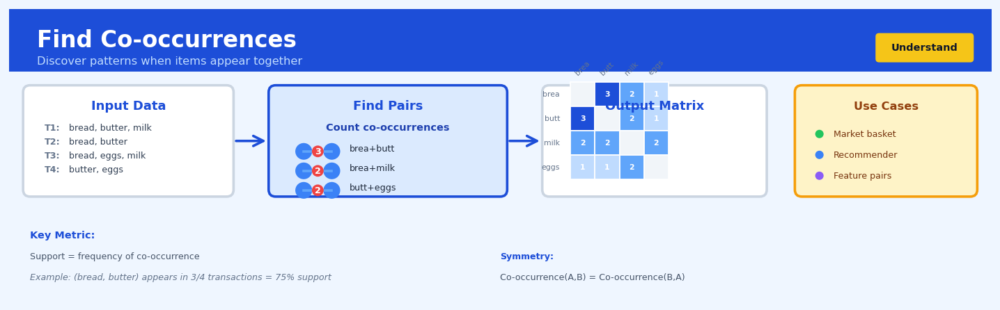

Find Co-occurrences#


The biggest mistake I see teams make with co-occurrence analysis is forgetting to normalize by item frequency—rare items will naturally have low co-occurrence counts even if they're highly correlated when they do appear. Always compare your raw co-occurrence counts against what you'd expect by chance, otherwise you'll just rediscover that popular items are popular. For high-dimensional data like text or genomics, consider using sliding windows or sentence boundaries rather than document-level co-occurrence to capture meaningful local relationships.
The 60-Second Version#
What it does: Find Co-occurrences reveals which things appear together more often than random chance would predict.
When to use it: You have transactions, events, or records where multiple items appear together—like shopping baskets, diagnosis codes, or product features—and you want to know which combinations are genuinely connected, not just common.
What you get back: A ranked list of item pairs (or groups) with scores showing association strength, so you can prioritize which relationships to act on—bundling products, recommending next purchases, or investigating causal links.
Difficulty |
Easy |
Typical runtime |
Seconds on 100K transactions |
What you bring |
Transactional data: records showing which items appear together |
What you get |
Ranked pairs with association scores (lift, confidence, support) |
Heuristix bucket |
Understand — Statistical Analysis & Profiling |
Co-occurrence is not causation—it identifies patterns that appear together, not why they appear together or which causes which.
Learning Objectives#
After reading this chapter, a business user will be able to:
Identify situations where co-occurrence analysis applies, such as cross-selling opportunities, content recommendation, symptom clustering, and fraud pattern detection, by recognizing the presence of transactional or set-valued data.
Interpret support, confidence, and lift metrics to distinguish between frequent pairings driven by popularity versus genuine associations that reveal meaningful relationships.
Prioritize which product bundles to promote, which content to recommend together, or which events to investigate further by comparing lift values and filtering results by minimum support thresholds.
After reading this chapter, a data scientist will be able to:
Implement co-occurrence analysis using market basket algorithms (Apriori, FP-Growth) while correctly handling sparse data, choosing appropriate transaction formats, and managing computational complexity for large datasets.
Tune minimum support and confidence thresholds by balancing the trade-off between discovering rare but meaningful associations and avoiding spurious patterns from low-frequency noise.
Validate co-occurrence results by testing for statistical significance using permutation tests or chi-square statistics, and diagnose issues such as base-rate fallacies, Simpson’s paradox, and temporal instability in associations.
Overview#
Find Co-occurrences is a statistical technique for discovering which items, events, or attributes appear together more frequently than would be expected by chance alone. The method belongs to the family of association analysis and market basket analysis techniques, which aim to uncover hidden structural relationships in transactional or set-valued data. At its core, co-occurrence analysis transforms raw frequency counts into statistically meaningful measures of association strength, enabling analysts to distinguish genuine patterns from coincidental pairings driven by base rates.
When to Use This#
Use this technique when:
Identifying product affinities in retail transactions — when you need to understand which products customers frequently purchase together to inform cross-selling strategies, store layouts, or bundle pricing.
Analysing symptom or diagnosis co-occurrence in healthcare data — when exploring which conditions, symptoms, or treatments tend to appear together in patient records to support clinical decision-making or epidemiological research.
Discovering document term relationships — when building topic models, search engines, or recommendation systems that require understanding which words or phrases co-occur within documents or text windows.
Understanding user behaviour sequences — when analysing clickstream data, app usage logs, or customer journey touchpoints to identify common behavioural patterns.
Detecting fraud patterns — when specific combinations of attributes (merchant categories, transaction times, device fingerprints) appear together in fraudulent cases at rates different from legitimate transactions.
Exploring survey response patterns — when multiple-response questions or checkbox data need analysis to understand which options respondents commonly select together.
Network and graph analysis preprocessing — when building co-occurrence matrices to feed into downstream techniques such as dimensionality reduction, clustering, or embedding algorithms.
Do NOT use this technique when:
You need causal inference — co-occurrence measures association, not causation. Items appearing together does not imply one causes the other.
Your data has strong temporal dependencies you wish to preserve — co-occurrence analysis typically ignores sequence; use sequential pattern mining instead.
You have continuous variables — this technique is designed for categorical or set-valued data. For continuous relationships, consider correlation analysis or regression.
Questions This Answers#
Product and Service Bundling#
Which products do customers consistently buy together that we should bundle into a package deal?
When someone purchases our premium membership, what other services do they typically add within the first 30 days?
Are there unexpected product combinations that high-value customers buy that we’re not promoting together?
If we discontinue Product X, which items will likely see a sales drop because customers usually buy them as a pair?
What complementary items should we recommend at checkout to increase average order value by 15-20%?
Customer Behavior and Experience#
When customers complain about delivery times, what other issues tend to show up in the same support ticket?
Which symptoms appear together most often in patient records that might indicate an underlying condition we’re missing?
What characteristics do our churned customers from Q3 share—are certain usage patterns appearing together as warning signs?
When employees leave within their first six months, what combination of factors keeps showing up in their feedback?
Marketing and Campaign Strategy#
Which customer segments should we target together because they respond to the same types of promotions?
Are certain keywords or themes appearing together in our top-performing social media posts that we should replicate?
When customers click on our email campaigns, what other marketing channels do they typically engage with in the same week?
Which events or promotions drive customers to buy multiple product categories at once instead of just one?
Do customers who attend our webinars also download specific resources, suggesting we should package them differently?
How It Works#
Imagine you’re a coffee shop owner tracking what customers buy together. You notice that customers who order a croissant also grab a latte about 70% of the time. At first, this seems impressive—until you realize that 65% of all customers buy lattes anyway, because lattes are your bestseller. The croissant isn’t really special; most people get lattes with anything. But then you notice something else: customers who buy a croissant and order almond milk together happen 15 times more often than you’d expect if people randomly combined those choices. That’s not just popular items appearing together—that’s a genuine co-occurrence pattern worth investigating.
TRANSACTION DATA CO-OCCURRENCE COUNTING STATISTICAL FILTERING
┌─────────────────┐ ┌──────────────────────┐ ┌─────────────────────┐
│ Trans │ Items │ │ Pair │ Count │ │ Pair │ Strength │
├───────┼─────────┤ ├───────────┼──────────┤ ├──────────┼──────────┤
│ T1 │ A, B, C │ │ (A, B) │ 8 │ │ (A, B) │ weak │
│ T2 │ A, B │ ──────> │ (A, C) │ 6 │ ────> │ (A, C) │ weak │
│ T3 │ B, C │ Count │ (B, C) │ 7 │ Filter │ (B, D) │ STRONG ✓ │
│ T4 │ A, B, D │ pairs │ (B, D) │ 3 │ for │ (C, E) │ STRONG ✓ │
│ T5 │ C, E │ │ (C, E) │ 2 │unusual │ │ │
│ ... │ ... │ │ ... │ ... │ pairs │ (others filtered) │
└───────┴─────────┘ └───────────┴──────────┘ └─────────────────────┘
Scan all Raw frequency Surprising pairs
transactions counts (adjusted for base rates)
Step 1: Collect transaction records. The technique starts with data where each record contains a bundle of items—shopping carts, movie viewing sessions, patient symptoms, or words appearing in documents. Each transaction is simply a set of things that occurred together.
Step 2: Count every pair. The algorithm scans through all transactions and counts how many times each possible pair of items appears together. If item A appears with item B in eight transactions, that pair gets a count of eight. This creates a massive tally of every combination.
Step 3: Calculate individual item frequencies. Separately, the algorithm counts how often each single item appears across all transactions. Item A might appear in forty transactions total, item B in fifty. These individual frequencies matter because they represent the baseline expectation—how common each item is on its own.
Step 4: Compute expected co-occurrence. For each pair, the algorithm calculates how often we’d expect those items to appear together purely by chance, based on their individual popularity. If item A appears in forty percent of transactions and item B in fifty percent, random pairing would create overlap in about twenty percent of cases.
Step 5: Compare actual to expected. The technique measures the gap between what actually happened and what random chance predicts. If items appear together far more often than their individual frequencies suggest, that’s a meaningful co-occurrence. If they appear together only as often as expected—or less—there’s no special relationship.
Step 6: Rank and filter results. Finally, the algorithm surfaces pairs where the actual frequency significantly exceeds the expected frequency, filtering out coincidental pairings driven purely by popularity. What remains are the genuinely interesting associations.
The key insight: Co-occurrence analysis separates meaningful patterns from mere popularity by asking not just “do these appear together?” but “do these appear together more than their individual frequencies would predict?”
The Intuition#
Imagine you manage a large supermarket and notice that customers often buy bread and butter together. Before concluding these items have a special affinity, you must ask a critical question: given how popular bread and butter each are individually, how surprising is it that they appear together? If bread appears in 80% of baskets and butter appears in 60%, you would expect them to co-occur in roughly 48% of baskets by chance alone, even if customers selected items completely at random. The goal of co-occurrence analysis is to measure whether observed co-occurrence rates exceed (or fall below) these chance expectations.
The intuition deepens when you consider the difference between support and lift. Support tells you the raw frequency—how often two items appear together in absolute terms. Lift tells you the relative surprise—how much more often items co-occur than independence would predict. A pair with high support but lift near 1.0 is not particularly interesting; they appear together often simply because each item is common. Conversely, a pair with moderate support but lift of 3.0 represents a genuine affinity worth investigating, even if absolute counts are lower.
This distinction becomes crucial in practice. A retailer analysing millions of transactions might find that milk and bread have enormous support but unremarkable lift—they co-occur often, but this reveals nothing actionable because both are staples purchased by nearly everyone. Meanwhile, craft beer and artisanal cheese might have lower support but exceptional lift, representing a true customer segment with distinct preferences that can inform targeted marketing, store placement, and inventory decisions. Co-occurrence analysis provides the statistical machinery to separate these cases rigorously.
The Mathematics#
Problem Setup and Notation#
Let \(\mathcal{T} = \{T_1, T_2, \ldots, T_N\}\) be a collection of \(N\) transactions, where each transaction \(T_i \subseteq \mathcal{I}\) is a subset of a universal item set \(\mathcal{I} = \{I_1, I_2, \ldots, I_M\}\). We seek to quantify the association strength between item pairs \((I_a, I_b)\) where \(a \neq b\).
Define the following frequency counts:
where \(n_{ab}\) is the number of transactions containing both items, and \(n_a\), \(n_b\) are the marginal counts for each item.
Core Metrics#
Support measures the prevalence of the co-occurrence:
Confidence measures the conditional probability:
Note that confidence is asymmetric: \(\text{confidence}(I_a \Rightarrow I_b) \neq \text{confidence}(I_b \Rightarrow I_a)\) in general.
Lift measures the ratio of observed to expected co-occurrence under independence:
Lift is symmetric and has the following interpretation:
\(\text{lift} = 1\): items are independent
\(\text{lift} > 1\): items co-occur more than expected (positive association)
\(\text{lift} < 1\): items co-occur less than expected (negative association)
Statistical Significance Testing#
To determine whether an observed lift differs significantly from 1.0, we employ hypothesis testing. Under the null hypothesis \(H_0\) of independence:
The exact distribution of \(n_{ab}\) under \(H_0\) follows a hypergeometric distribution:
For large samples, we use the chi-squared test. Construct the \(2 \times 2\) contingency table:
\(I_b\) present |
\(I_b\) absent |
Total |
|
|---|---|---|---|
\(I_a\) present |
\(n_{ab}\) |
\(n_a - n_{ab}\) |
\(n_a\) |
\(I_a\) absent |
\(n_b - n_{ab}\) |
\(N - n_a - n_b + n_{ab}\) |
\(N - n_a\) |
Total |
\(n_b\) |
\(N - n_b\) |
\(N\) |
The chi-squared statistic is:
where \(O\) represents observed counts and \(E\) represents expected counts under independence.
Pointwise Mutual Information#
An information-theoretic perspective yields Pointwise Mutual Information (PMI):
PMI has attractive properties: it is symmetric, equals zero under independence, and is additive for independent combinations. However, PMI is biased towards rare events. The Normalised PMI (NPMI) corrects this:
NPMI is bounded in \([-1, 1]\), where \(-1\) indicates items never co-occur, \(0\) indicates independence, and \(1\) indicates perfect co-occurrence.
Assumptions#
Transaction independence: Each transaction is drawn independently from the same distribution.
Stationarity: The co-occurrence structure does not change over the observation period.
Complete observation: All items in each transaction are recorded without systematic missingness.
Sufficient sample size: Asymptotic approximations (chi-squared, normal) require adequate counts in all cells—typically \(E \geq 5\) for chi-squared validity.
Edge Cases and Degenerate Conditions#
Zero co-occurrence (\(n_{ab} = 0\)): Lift is undefined when the numerator is zero by convention, though \(\text{lift} \to 0\). PMI approaches \(-\infty\).
Universal items (\(n_a = N\) or \(n_b = N\)): If an item appears in every transaction, lift reduces to 1 for all pairs involving that item—no information is gained.
Rare items: When \(n_a\) or \(n_b\) is small, variance in lift estimates becomes large, and spuriously high lift values may emerge.
Relationship to Other Methods#
Co-occurrence analysis forms the foundation for association rule mining algorithms such as Apriori and FP-Growth, which extend pairwise analysis to higher-order itemsets. The co-occurrence matrix \(\mathbf{C}\) where \(C_{ab} = n_{ab}\) is the input to spectral methods including Latent Semantic Analysis (via SVD) and word embedding algorithms (Word2Vec’s skip-gram with negative sampling implicitly factorises a shifted PMI matrix).
Understanding the Mathematics#
Observed Co-occurrence Count#
The equation: $\(O_{ij} = \text{count}(i \cap j)\)$
Read it aloud: “The observed co-occurrence of items i and j equals the count of transactions where both item i and item j appear together.”
What each symbol means:
\(O_{ij}\) = the number of times we actually see items i and j together
\(i\) = the first item (e.g., “coffee”)
\(j\) = the second item (e.g., “milk”)
\(\cap\) = “and” or “intersection” (both must be present)
\(\text{count}()\) = tally up how many times this occurs
A concrete numerical example: You manage a grocery store and examine 10,000 transactions. Coffee appears with milk in 450 baskets. So \(O_{\text{coffee,milk}} = 450\). You literally counted 450 receipts that contained both items.
Why this equation matters: This raw count is our starting point—without it, we have no evidence of co-occurrence—but alone it’s misleading because popular items naturally appear together more often by chance.
Expected Co-occurrence Under Independence#
The equation: $\(E_{ij} = \frac{n_i \times n_j}{N}\)$
Read it aloud: “The expected co-occurrence of items i and j equals the count of item i, times the count of item j, divided by the total number of transactions.”
What each symbol means:
\(E_{ij}\) = how many times i and j should appear together if they’re unrelated
\(n_i\) = total count of transactions containing item i
\(n_j\) = total count of transactions containing item j
\(N\) = total number of transactions in the dataset
\(\times\) and \(/\) = standard multiplication and division
A concrete numerical example: Coffee appears in 2,000 of your 10,000 transactions. Milk appears in 3,000 transactions. If they were independent: \(E_{\text{coffee,milk}} = \frac{2000 \times 3000}{10000} = \frac{6,000,000}{10000} = 600\). By pure chance, we’d expect them together 600 times.
Why this equation matters: This establishes our baseline—if the observed count doesn’t exceed this expected value, the co-occurrence is just coincidence driven by item popularity.
Lift Ratio#
The equation: $\(\text{Lift}_{ij} = \frac{O_{ij}}{E_{ij}}\)$
Read it aloud: “The lift of items i and j equals the observed co-occurrence count divided by the expected co-occurrence count.”
What each symbol means:
\(\text{Lift}_{ij}\) = the strength of association between items i and j
\(O_{ij}\) = actual count of i and j together (from our data)
\(E_{ij}\) = expected count if items were independent (our baseline)
A concrete numerical example: Coffee and milk appeared together 450 times, but we expected 600 times. So \(\text{Lift}_{\text{coffee,milk}} = \frac{450}{600} = 0.75\). A lift below 1.0 means they co-occur less than chance would predict—perhaps your customers prefer tea with milk instead.
Now consider coffee and pastries: observed 800 times, expected 400 times. \(\text{Lift}_{\text{coffee,pastry}} = \frac{800}{400} = 2.0\). This pair appears twice as often as random chance predicts—a genuine positive association.
Why this equation matters: Lift normalizes away the bias of item popularity, letting us compare association strength across any pair of items regardless of how common each item is individually.
Pointwise Mutual Information (PMI)#
The equation: $\(\text{PMI}_{ij} = \log_2\left(\frac{O_{ij}/N}{(n_i/N) \times (n_j/N)}\right) = \log_2(\text{Lift}_{ij})\)$
Read it aloud: “The pointwise mutual information of items i and j equals the logarithm base 2 of their lift ratio.”
What each symbol means:
\(\text{PMI}_{ij}\) = information-theoretic measure of association strength
\(\log_2\) = logarithm base 2 (measures “bits” of information)
The fraction inside simplifies to our lift ratio
A concrete numerical example: Coffee and pastries have \(\text{Lift} = 2.0\). So \(\text{PMI}_{\text{coffee,pastry}} = \log_2(2.0) = 1.0\) bit. This means observing one item gives you 1 bit of information about whether the other appears. For coffee and milk with \(\text{Lift} = 0.75\): \(\text{PMI}_{\text{coffee,milk}} = \log_2(0.75) = -0.415\) bits—negative values indicate items that avoid each other.
Why this equation matters: PMI transforms multiplicative lift into an additive scale where zero means independence, making it easier to compare many associations and apply threshold-based filtering.
The Big Picture#
The mathematics of co-occurrence analysis solves one central problem: separating signal from noise when popular items naturally appear together often. Raw counts mislead us because a bestselling item will co-occur with everything frequently. The expected count formula gives us a probabilistic baseline assuming independence, then lift and PMI measure how far reality deviates from that null hypothesis. We chose these metrics specifically because they account for base rates—simpler alternatives like raw counts or conditional probabilities fail to distinguish “popular items coincidentally together” from “items genuinely attracted to each other.” The entire mathematical framework answers one question: is this pair together more than randomness would predict?
Python Implementation#
"""
Co-occurrence Analysis: Complete Implementation
Demonstrates computation of support, confidence, lift, PMI, and statistical tests.
"""
import numpy as np
import pandas as pd
from scipy import stats
from itertools import combinations
from collections import defaultdict
# -----------------------------------------------------------------------------
# Step 1: Create realistic synthetic transaction data
# Simulating retail basket data with planted associations
# -----------------------------------------------------------------------------
np.random.seed(42)
# Define items and their base purchase probabilities
items = ['Bread', 'Butter', 'Milk', 'Eggs', 'Cheese', 'Wine', 'Crackers', 'Coffee', 'Tea', 'Sugar']
base_probs = [0.6, 0.4, 0.5, 0.35, 0.25, 0.15, 0.12, 0.3, 0.2, 0.25]
n_transactions = 5000
transactions = []
for _ in range(n_transactions):
basket = []
for item, prob in zip(items, base_probs):
if np.random.random() < prob:
basket.append(item)
# Plant strong associations: Wine and Cheese, Coffee and Sugar
if 'Wine' in basket and np.random.random() < 0.7:
if 'Cheese' not in basket:
basket.append('Cheese')
if 'Coffee' in basket and np.random.random() < 0.6:
if 'Sugar' not in basket:
basket.append('Sugar')
transactions.append(basket)
print(f"Generated {len(transactions)} transactions")
print(f"Sample transaction: {transactions[0]}")
# -----------------------------------------------------------------------------
# Step 2: Compute item frequencies and co-occurrence counts
# -----------------------------------------------------------------------------
def compute_cooccurrence_stats(transactions, items):
"""
Compute all pairwise co-occurrence statistics.
Returns DataFrame with support, confidence, lift, PMI, and chi-squared p-value.
"""
n_trans = len(transactions)
# Count individual item frequencies
item_counts = defaultdict(int)
for trans in transactions:
for item in trans:
item_counts[item] += 1
# Count pairwise co-occurrences
pair_counts = defaultdict(int)
for trans in transactions:
# Generate all pairs within this transaction
for pair in combinations(sorted(set(trans)), 2):
pair_counts[pair] += 1
# Compute statistics for each pair
results = []
for item_a, item_b in combinations(items, 2):
pair = tuple(sorted([item_a, item_b]))
n_ab = pair_counts.get(pair, 0)
n_a = item_counts[item_a]
n_b = item_counts[item_b]
# Support
support = n_ab / n_trans
# Confidence (both directions)
conf_a_to_b = n_ab / n_a if n_a > 0 else 0
conf_b_to_a = n_ab / n_b if n_b > 0 else 0
# Lift
expected = (n_a * n_b) / n_trans
lift = n_ab / expected if expected > 0 else np.nan
# PMI and NPMI
p_ab = n_ab / n_trans
p_a = n_a / n_trans
p_b = n_b / n_trans
if p_ab > 0 and p_a > 0 and p_b > 0:
pmi = np.log2(p_ab / (p_a * p_b))
npmi = pmi / (-np.log2(p_ab)) if p_ab < 1 else 0
else:
pmi = np.nan
npmi = np.nan
# Chi-squared test for independence
# Construct contingency table
observed = np.array([
[n_ab, n_a - n_ab],
[n_b - n_ab, n_trans - n_a - n_b + n_ab]
])
if np.all(observed >= 0):
chi2, p_value, dof, expected_freq = stats.chi2_contingency(observed)
else:
chi2, p_value = np.nan, np.nan
results.append({
'item_a': item_a,
'item_b': item_b,
'count_a': n_a,
'count_b': n_b,
'count_ab': n_ab,
'support': support,
'confidence_a_to_b': conf_a_to_b,
'confidence_b_to_a': conf_b_to_a,
'lift': lift,
'pmi': pmi,
'npmi': npmi,
'chi2': chi2,
'p_value': p_value
})
return pd.DataFrame(results)
# Run the analysis
cooccurrence_df = compute_cooccurrence_stats(transactions, items)
# -----------------------------------------------------------------------------
# Step 3: Display and interpret results
# -----------------------------------------------------------------------------
print("\n" + "="*80)
print("TOP 10 ITEM PAIRS BY LIFT (Positive Associations)")
print("="*80)
top_lift = cooccurrence_df.nlargest(10, 'lift')[
['item_a', 'item_b', 'support', 'lift', 'npmi', 'p_value']
].round(4)
print(top_lift.to_string(index=False))
print("\n" + "="*80)
print("STATISTICALLY SIGNIFICANT ASSOCIATIONS (p < 0.001, Lift > 1.5)")
print("="*80)
significant = cooccurrence_df[
(cooccurrence_df['p_value'] < 0.001) &
(cooccurrence_df['lift'] > 1.5)
].sort_values('lift', ascending=False)
print(significant[['item_a', 'item_b', 'count_ab', 'support', 'lift', 'p_value']].round(4).to_string(index=False))
# -----------------------------------------------------------------------------
# Step 4: Build and visualise the co-occurrence matrix
# -----------------------------------------------------------------------------
def build_cooccurrence_matrix(cooccurrence_df, items, metric='lift'):
"""
Build a symmetric matrix from
## Visualisations


## Using This in Heuristix
### What Data You'll Need
The Find Co-occurrences node expects **transaction-style data** where each row represents an item within a transaction or event. You need two columns:
- **Transaction ID column**: Groups items that occur together (order numbers, session IDs, user IDs, timestamps)
- **Item column**: The thing being purchased, clicked, diagnosed, or co-occurring (product names, page URLs, symptoms, tags)
**Example input data:**
| order_id | product |
|----------|---------|
| 001 | Coffee |
| 001 | Croissant |
| 001 | Butter |
| 002 | Coffee |
| 002 | Muffin |
The node will analyze which products appear together within the same order more often than random chance would predict.
### Configuration Parameters
| Parameter | What It Does | Default | When to Adjust |
|-----------|--------------|---------|----------------|
| **Transaction Column** | Identifies which field groups items together | (none) | Required - select your ID column |
| **Item Column** | The thing you're finding associations between | (none) | Required - select your item/product column |
| **Minimum Support** | Minimum times a pair must appear together (absolute count) | 5 | Increase for large datasets (10-20+) to reduce noise; decrease for rare items (2-3) |
| **Minimum Confidence** | Minimum % of times item A's presence predicts item B | 0.3 (30%) | Increase to 0.5+ for stronger rules; lower to 0.2 for exploratory work |
| **Minimum Lift** | How much more likely items co-occur vs. random | 1.5 | Keep above 1.0 (meaningful association); use 2.0+ for only strong relationships |
| **Max Items in Set** | Limit analysis to pairs, triplets, or larger groups | 2 (pairs) | Usually keep at 2 for interpretability; increase to 3 for three-way associations |
### What You'll Get Back
The node outputs a **co-occurrence rules table** with one row per item pair (or set). Key columns include:
- **Item A** and **Item B**: The co-occurring items
- **Support Count**: How many transactions contain both items
- **Confidence**: P(B|A) — if someone has A, what % also have B
- **Lift**: The strength multiplier (2.5 = 2.5× more likely than random)
- **Conviction**: How much more often A appears without B than expected
You'll also see:
- **Scatter plot**: Confidence vs. Lift with bubble size showing support — helps spot high-confidence, high-lift rules worth acting on
- **Network graph**: Visual web showing which items cluster together
- **Summary stats**: Total rules found, top associations, coverage metrics
### Quick Start
1. **Connect your transaction data** to the Find Co-occurrences node
2. **Select your Transaction ID column** (order number, session, etc.)
3. **Select your Item column** (product name, page URL, symptom)
4. **Set Minimum Support to 5-10** depending on dataset size
5. **Keep Minimum Lift at 1.5** for your first run
6. **Run the node** and examine the scatter plot — look for rules in the upper-right (high confidence, high lift)
7. **Sort the output table by Lift descending** to see strongest associations first
### Connecting Downstream
Typically, you'll route co-occurrence results to:
- **Filter node**: Keep only rules above certain lift/confidence thresholds
- **Export node**: Send top rules to product, marketing, or clinical teams
- **Visualization node**: Create custom charts for presentations
- **Decision node**: Trigger recommendations or alerts based on rule matches
### Practical Tips from the Field
**Beware of popularity bias**: High-selling items will naturally co-occur with everything. Focus on **lift** rather than raw support counts to find genuinely interesting patterns, not just bestseller effects.
**Start conservative, then relax**: Begin with higher minimum support (10+) and lift (2.0+) to see clear patterns, then gradually lower thresholds to discover more subtle associations.
**Check bidirectional confidence**: Coffee→Croissant might have 60% confidence, but Croissant→Coffee might have 90%. These asymmetries reveal which item is the "anchor" purchase.
**Temporal data needs care**: If your transaction ID is a timestamp or user ID, you're finding items that co-occur *across time for the same entity*, not within single baskets. Make sure that's your intention.
**Filter out trivial rules**: Product bundles, kits, or required purchases will show perfect co-occurrence but aren't actionable insights. Pre-filter these out or ignore them in results.
## Config Recipes
### Recipe 1: Quick Exploration
**When to use:** Initial data exploration on a new dataset when you need to rapidly identify the strongest co-occurrence signals without concern for statistical rigor.
**Settings:**
| Parameter | Value | Why |
|-----------|-------|-----|
| `min_support` | 0.01 | Captures patterns in at least 1% of records; filters noise without missing major patterns |
| `min_confidence` | 0.3 | Low threshold reveals directional associations quickly |
| `metric` | 'lift' | Simple ratio; easy to interpret for non-statisticians |
| `max_len` | 2 | Restricts to pairwise relationships; fastest computation |
| `n_samples` | 10000 | Sample cap for large datasets; prevents hour-long runs |
**What you get:** A ranked list of item pairs that appear together more often than expected, sorted by lift ratio, typically generating 50-200 associations for manual review.
**Trade-off:** No correction for multiple testing means many findings won't replicate; sampling introduces variance that obscures rare but meaningful patterns.
---
### Recipe 2: Production-Grade Analysis
**When to use:** Publishing findings in reports, building recommendation systems, or any scenario where false discoveries create business risk or reputational harm.
**Settings:**
| Parameter | Value | Why |
|-----------|-------|-----|
| `min_support` | 0.005 | Balances statistical power with rare pattern detection |
| `min_confidence` | 0.5 | Ensures associations have predictive value |
| `metric` | 'kulczynski' | Symmetric measure robust to imbalanced frequencies |
| `max_len` | 3 | Allows triplet discovery without combinatorial explosion |
| `correction` | 'bonferroni' | Controls family-wise error rate across all tests |
| `ci_level` | 0.95 | Attaches confidence intervals to each association |
| `n_samples` | None | Uses full dataset; no sampling shortcuts |
**What you get:** A conservative set of statistically validated co-occurrences with effect size estimates and uncertainty bounds suitable for decision-making.
**Trade-off:** Runs 10-100× slower than exploration mode; Bonferroni correction may be overly conservative, missing real patterns in high-dimensional data.
---
### Recipe 3: Sparse Event Data
**When to use:** Analyzing rare events like equipment failures, fraud cases, or adverse drug reactions where occurrences affect less than 0.1% of observations.
**Settings:**
| Parameter | Value | Why |
|-----------|-------|-----|
| `min_support` | 0.0001 | Absolute count threshold (e.g., 10 occurrences) more appropriate than percentage |
| `metric` | 'cosine' | Handles extreme sparsity better than lift |
| `max_len` | 4 | Rare events often co-occur in larger sets |
| `prune` | False | Prevents elimination of infrequent but critical patterns |
**What you get:** Co-occurrences among rare events that standard thresholds would completely miss, revealing multi-factor risk signatures.
**Trade-off:** High computational cost; generates many spurious associations requiring domain expertise to filter.
---
### Recipe 4: Temporal Stability Testing
**When to use:** Validating that discovered co-occurrences aren't artifacts of a specific time period, seasonality, or data collection shift—surprisingly useful for debugging data quality issues.
**Settings:**
| Parameter | Value | Why |
|-----------|-------|-----|
| `time_split` | 'quarterly' | Divides data into sequential windows |
| `min_support` | 0.02 | Consistent per-window threshold |
| `stability_threshold` | 0.7 | Requires pattern in 70% of time windows |
| `metric` | 'lift' | Same measure across all windows for comparability |
**What you get:** Only co-occurrences that persist across time, effectively filtering data collection artifacts and temporary correlations.
**Trade-off:** Misses genuinely new emerging patterns; requires sufficient data volume in each time window.
## Business Applications
**Financial Services**
A mid-sized UK mortgage lender was drowning in false-positive fraud alerts, investigating 3,000+ cases monthly with a 92% false-positive rate. By applying co-occurrence analysis to transaction patterns, device fingerprints, and timing data, they identified that legitimate customers consistently showed specific attribute combinations (e.g., home IP + established merchant + weekend timing) while fraudsters exhibited different co-occurrence signatures (new device + overseas merchant + rapid successive transactions). This reduced false positives by 67% while maintaining fraud detection rates, saving £840,000 annually in investigation costs and dramatically improving customer experience.
**Retail**
An e-commerce retailer with 4.2M SKUs struggled to create relevant product recommendations beyond simple "frequently bought together" rules that merely reflected bestsellers. Co-occurrence analysis revealed statistically significant item pairings adjusted for base rates—for instance, finding that buyers of specialty hiking boots paired them with obscure trail guides at 14× the expected rate, while popular items appeared together simply due to volume. Implementing base-rate-adjusted recommendations lifted average order value from £47 to £61 and increased cross-category purchases by 28%.
**Healthcare**
A regional hospital network analyzing 180,000 patient records discovered that certain symptom combinations predicted adverse drug reactions far earlier than individual symptoms alone. Co-occurrence analysis of patient-reported symptoms, lab values, and medication timing revealed that nausea + elevated liver enzymes + specific timing relative to statin administration co-occurred at rates 23× higher than chance in patients who later experienced rhabdomyolysis. Early detection protocols triggered by these co-occurrence patterns reduced serious adverse events by 41% and decreased associated treatment costs by approximately $2.1M annually.
**Insurance**
A commercial property insurer processing 12,000 claims yearly found that traditional risk models missed subtle fraud patterns. Co-occurrence analysis of claim attributes—damage type, contractor selection, witness statements, and timing relative to policy inception—revealed that certain combinations (water damage + specific contractor network + claim filed 45–60 days post-policy + no independent witnesses) occurred together at rates far exceeding chance. This signature approach identified a £4.7M fraud ring operating across three regions that individual signal analysis had missed entirely.
**Manufacturing**
An automotive parts manufacturer experiencing intermittent quality issues in transmission components couldn't isolate root causes through standard quality control. Co-occurrence analysis of production variables—machine ID, operator shift, raw material lot, ambient temperature, and time since maintenance—revealed that defects spiked when three specific conditions aligned: Supplier B steel + third-shift operation + machines 48+ hours post-calibration. Addressing this specific combination reduced defect rates from 3.2% to 0.4%, preventing an estimated $8M in warranty claims.
**Logistics**
A European logistics company with 2,400 delivery routes struggled with unpredictable delays affecting customer satisfaction scores. Simple correlation analysis missed the interactions, but co-occurrence analysis revealed that delays concentrated when specific combinations appeared: driver experience <6 months + Friday deliveries + routes containing both residential and commercial stops + precipitation. Restructuring routes and staffing to avoid these co-occurrence patterns cut late deliveries from 18% to 7%.
**Marketing**
A B2B SaaS marketing team couldn't explain why some content combinations drove enterprise leads while others flooded them with unqualified free-trial signups. Co-occurrence analysis of content consumption sequences showed that whitepapers + pricing page + case study (in that order, within 48 hours) co-occurred in 78% of enterprise deals but only 3% of free-trial-only visitors. Redesigning nurture campaigns around these co-occurrence patterns lifted enterprise lead conversion from 1.8% to 4.3%.
**Telecommunications**
A mobile network operator analyzing churn discovered that customer complaints co-occurring with specific patterns—billing inquiry + network issue ticket + competitor ad exposure (tracked via web behavior)—predicted churn at 8.2× the base rate when occurring within a 14-day window. Proactive retention outreach triggered by these co-occurrences reduced monthly churn by 22%, retaining approximately $18M in annual recurring revenue.
**Public Sector**
A city transportation authority studying 400,000 traffic incidents found that co-occurrence analysis of road conditions, time patterns, and weather revealed that accidents spiked dramatically when minor road damage + school holidays + light rain combined on specific route segments. This non-obvious pattern led to targeted road maintenance scheduling that reduced accidents on treated segments by 31% within six months.
## Worked Example
Sarah Chen, a senior data scientist at Meridian Insurance, was summoned to a Tuesday morning meeting with the head of claims operations. "We're seeing a spike in fraudulent auto claims," he told her, sliding a printout across the conference table. "But here's the thing—our fraud model flags individual claims. What we're missing is *patterns*. Are certain types of damage being reported together more often in fraudulent claims than legitimate ones?"
The question mattered because Meridian was losing an estimated $4.2 million annually to organized fraud rings. If Sarah could identify telltale combinations—say, whiplash plus rear bumper damage plus rental car charges—the fraud investigation team could prioritize cases more effectively, potentially saving millions while reducing false positives that frustrated honest customers.
Sarah pulled three months of closed claims data: 8,847 auto claims, each tagged as fraudulent or legitimate after investigation, with detailed damage type codes. The data was messier than she'd hoped—some adjusters used "BUMPER_REAR" while others wrote "RR_BUMPER," and there were 47 distinct damage types in total. She spent an afternoon cleaning and standardizing the codes before extracting just the confirmed fraud cases: 312 claims.
| Claim_ID | Damage_1 | Damage_2 | Damage_3 | Damage_4 |
|----------|----------|----------|----------|----------|
| FR-10847 | WHIPLASH | REAR_BUMPER | RENTAL | NULL |
| FR-10901 | SIDE_PANEL | HEADLIGHT | NULL | NULL |
| FR-10958 | WHIPLASH | REAR_BUMPER | TRUNK | RENTAL |
| FR-11003 | WINDSHIELD | HOOD | NULL | NULL |
| FR-11129 | WHIPLASH | RENTAL | REAR_BUMPER | TAILLIGHT |
Sarah needed these damage types in transactional format—one row per claim, one column listing all damage codes as a set. She reshaped the data and loaded it into her co-occurrence analysis.
When configuring the node, Sarah made several deliberate choices. She set the **minimum support threshold to 3%**—she wanted patterns appearing in at least 10 of the 312 fraud claims, filtering out pure noise. For the **confidence metric**, she kept the default but focused primarily on **lift**, which would tell her whether damage types appeared together *more often than their individual frequencies would predict*. A lift of 2.0 would mean the combination appeared twice as often as chance alone would suggest—that was the signal she was hunting for.
She ran the analysis and exported the top results. The output table showed 23 significant co-occurrence pairs, but three jumped off the screen:
| Item_A | Item_B | Support | Confidence | Lift |
|--------|--------|---------|------------|------|
| WHIPLASH | REAR_BUMPER | 0.089 | 0.71 | 2.84 |
| WHIPLASH | RENTAL | 0.077 | 0.62 | 2.41 |
| REAR_BUMPER | RENTAL | 0.083 | 0.68 | 2.67 |
The numbers told a clear story. Whiplash appeared in 31% of fraudulent claims, rear bumper damage in 25%, and rental charges in 28%—all elevated compared to legitimate claims, but not wildly so. But *together*, they appeared 2.4 to 2.8 times more often than random chance would predict. The three-way combination of all three appeared in 24 claims with a lift of 3.1.
The insight crystallized when Sarah cross-referenced these patterns with claim timing data: these combinations appeared disproportionately in "crash for cash" schemes, where fraudsters staged rear-end collisions at stop lights, then filed inflated claims including medically unverifiable whiplash and unnecessarily extended rental periods.
Two weeks later, Sarah presented to the fraud task force. She proposed a simple rule: any claim containing two or more elements from this triad should automatically route to senior investigators rather than standard processing. The COO approved a three-month pilot.
The results were striking. Over the next quarter, the enhanced routing system flagged 87 claims, of which 61 were confirmed fraudulent after investigation—a precision rate of 70%, compared to 22% for their previous keyword-based system. More importantly, the average time to flag suspicious claims dropped from 18 days to 3 days, allowing Meridian to intervene before payments were issued. Projected annual savings: $2.8 million.
Looking back, Sarah admitted she would do two things differently. First, she would have analyzed legitimate claims alongside fraudulent ones from the start, using **conditional co-occurrence** to measure which combinations were *uniquely elevated* in fraud versus normal claims—the current analysis showed what appeared together in fraud, but not what *distinguished* fraud from legitimate accidents. Second, she'd underestimated how quickly fraud rings adapt; by month four, the pattern was already shifting as word spread. Co-occurrence analysis, she realized, wasn't a one-time solution but required continuous monitoring.
```python
# Sarah's core analysis script
import pandas as pd
from mlxtend.frequent_patterns import apriori, association_rules
from mlxtend.preprocessing import TransactionEncoder
# Load and reshape fraud claims data
claims = pd.read_csv('fraud_claims.csv')
damage_lists = claims[['Damage_1', 'Damage_2', 'Damage_3', 'Damage_4']].values
transactions = [list(filter(pd.notna, row)) for row in damage_lists]
# Convert to binary matrix format
te = TransactionEncoder()
te_array = te.fit(transactions).transform(transactions)
df_encoded = pd.DataFrame(te_array, columns=te.columns_)
# Find frequent itemsets (min 3% support)
frequent_items = apriori(df_encoded, min_support=0.03, use_colnames=True)
# Generate association rules, filter by lift
rules = association_rules(frequent_items, metric="lift", min_threshold=2.0)
rules = rules.sort_values('lift', ascending=False)
# Focus on 2-item combinations for clarity
rules_pairs = rules[rules['antecedents'].apply(len) == 1]
print(rules_pairs[['antecedents', 'consequents', 'support', 'confidence', 'lift']].head(10))
Interpreting Your Results#
You’re staring at a table full of word pairs or product combinations with columns of decimal numbers. Take a breath. Here’s exactly what you’re looking at and what it means.
The Co-occurrence Count#
Plain-English meaning: This is how many times two items appeared together in your dataset. If “coffee” and “milk” co-occur 847 times, that means 847 transactions, documents, or records contained both items.
Concrete benchmarks:
Below 30 occurrences: Likely noise unless you have a tiny dataset. Don’t trust patterns here.
30–100 occurrences: Potentially meaningful in medium datasets (1,000–10,000 records), but verify with lift.
Above 100: Strong signal worth investigating in most contexts.
Red flags: A co-occurrence count of 1,000+ but a low lift score (below 1.2) means these items appear together often simply because they’re both popular, not because they have a special relationship. You’re seeing volume, not insight.
Lift (The Most Important Metric)#
Plain-English meaning: Lift tells you how much more often two items appear together than you’d expect if they were independent. Lift = 3.2 means “these items appear together 3.2 times more often than random chance would predict.”
Concrete benchmarks:
Below 1.0: Negative association—these items actually avoid each other. Rare but worth investigating when found.
1.0–1.2: Essentially random. The co-occurrence is explained by base rates alone.
1.2–2.0: Weak but real association. Consider acting if the business impact is high or the pattern makes intuitive sense.
2.0–5.0: Moderate to strong association. This is actionable territory for most business applications.
Above 5.0: Very strong association. Either a goldmine or a data quality issue—verify immediately.
Red flags: Lift above 20 almost always indicates a data problem: duplicate records, data leakage (item A always implies item B by definition), or sampling bias. Investigate the raw transactions before trusting these pairs.
Confidence (Directional Strength)#
Plain-English meaning: “Given that someone bought item A, what’s the probability they also bought item B?” Confidence is asymmetric—confidence(A→B) differs from confidence(B→A).
Concrete benchmarks:
Below 0.20: Weak rule. Even when A is present, B appears less than 20% of the time.
0.20–0.50: Moderate predictive power. Useful for recommendations but not guarantees.
0.50–0.80: Strong directional relationship. Good foundation for bundling or upsell strategies.
Above 0.80: Very strong. When you see A, you almost always see B—check if this is definitional.
Red flags: Confidence of 1.0 (perfect) means B always appears with A. This is either a hierarchical relationship (all customers in “Premium” segment are also in “Active” segment by design) or a data collection artifact. Verify this isn’t measuring the same thing twice.
Support (Prevalence)#
Plain-English meaning: The percentage of all records containing this pair. Support = 0.05 means this combination appears in 5% of your dataset.
Concrete benchmarks:
Below 0.01: Rare combination. High lift might still make it valuable, but small sample size limits confidence.
0.01–0.05: Uncommon but substantial enough to analyze.
Above 0.05: Common pattern affecting a meaningful portion of your data.
Reading Multiple Outputs Together#
High lift + low support: A strong but niche pattern. Perfect for targeted interventions (e.g., specialty product bundles for specific customer segments).
High lift + high confidence + moderate support: The gold standard. You’ve found a robust, actionable pattern affecting enough records to matter.
High support + low lift: Popular items that just happen to co-occur frequently. Don’t mistake popularity for relationship.
High confidence in one direction but not the reverse: Asymmetric relationship. “Batteries” → “Electronics” has high confidence, but “Electronics” → “Batteries” doesn’t. This tells you batteries are rarely bought alone, but electronics purchases don’t always need batteries.
Sanity Check Checklist#
Do the top pairs make domain sense? If “winter coat” and “swimsuit” have high lift, something’s wrong.
Are any lift values above 20? Flag and manually inspect these records.
Is your minimum support threshold too low? If seeing hundreds of pairs with support < 0.001, you’re drowning in noise.
Do high-confidence pairs pass the reversal test? Check if the relationship makes sense in both directions.
Are item frequencies distributed reasonably? If one item appears in 90% of records, its co-occurrences will dominate spuriously.
Good Enough to Act On?#
Act when: Lift ≥ 2.0, support ≥ 0.02, confidence ≥ 0.30, and the pattern makes business sense. This combination indicates a real relationship affecting enough customers to justify operational changes. Don’t wait for perfect metrics—you’re looking for signal strong enough to outweigh the cost of action.
Decision Guidance#
What This Result Is Telling You#
Co-occurrence analysis reveals which items, events, or customer behaviors systematically happen together in ways that are not explained by their individual popularity alone. When you see a strong co-occurrence pattern, you’re learning that one thing predicts or accompanies another far more reliably than random chance would suggest. This is the foundation for product bundling strategies, cross-selling campaigns, content recommendation engines, and risk detection systems. The analysis doesn’t tell you why things occur together—only that they do with measurable consistency.
The key insight is distinguishing between items that appear together simply because they’re both common (high base rates) versus items that genuinely “travel together” more than expected. A grocery store might see bread and milk purchased in many transactions, but that could just reflect that both are popular items. Strong co-occurrence measures filter out this noise to surface pairs like “customers who buy diapers also buy beer at 3× the expected rate”—patterns that reveal non-obvious opportunities.
When co-occurrence metrics point to actionable patterns, you gain leverage: you can reposition inventory, redesign user interfaces to surface related items, create targeted promotions, or flag unusual combinations that signal fraud or operational errors. The statistical grounding means you’re not acting on gut instinct but on empirical evidence of behavioral clustering that your organization can systematically exploit or monitor.
Decision Points#
If you see this… |
It means… |
Recommended action |
Who acts on this |
|---|---|---|---|
Lift > 3.0 with support > 5% and confidence > 40% |
A strong, frequent, and reliable co-occurrence pattern |
Implement cross-sell recommendations, create product bundles, or optimize shelf placement |
Product managers, merchandising teams, marketing operations |
Lift > 5.0 but support < 1% |
A rare but extremely strong association |
Investigate for niche opportunities or potential data quality issues; consider specialized targeting for high-value segments |
Data analysts, fraud detection teams, category specialists |
Confidence > 70% with lift < 1.5 |
One item is very common, creating spurious appearance of association |
Do not act—refine analysis with better baseline correction or focus on lift instead of confidence alone |
Analytics leads, decision scientists |
Negative lift (< 0.8) with high statistical significance |
Items actively avoid each other; substitutes or mutually exclusive behaviors |
Position as alternatives, avoid bundling, investigate cannibalization effects |
Strategic planning, competitive analysis teams |
Previously strong pattern (lift > 3) drops below 2.0 over consecutive periods |
Changing customer preferences, market saturation, or competitive disruption |
Re-evaluate product positioning, refresh marketing campaigns, investigate external factors |
Category managers, business intelligence teams |
When to Proceed vs. Investigate Further#
Proceed with confidence when:
Lift exceeds 2.5 and support exceeds 3% and the pattern appears stable across at least three time periods
Statistical significance (p-value) is below 0.01 with sample size exceeding 1,000 transactions
The co-occurrence makes business sense and aligns with known customer needs or workflows
Proceed with caution when:
Lift is between 1.5–2.5 or support is between 1–3%
The pattern is novel or unexpected but not obviously spurious
You have directional hypotheses to test but limited runway for experimentation
Investigate before acting when:
Confidence is high (>60%) but lift is low (<1.5), suggesting base rate confusion
Support is extremely low (<0.5%) even with high lift, indicating potential outliers
Patterns emerge only in narrow time windows or specific customer segments
Results contradict established domain knowledge without clear explanation
Do not use these results yet when:
Sample size is below 500 transactions or 100 occurrences of the rarer item
Data quality issues are unresolved (missing values >10%, duplicate records, incomplete transaction capture)
Temporal dynamics are ignored (e.g., analyzing years of data without accounting for seasonality or trends)
The Cost of Getting This Wrong#
Misinterpreting co-occurrence results typically manifests in two expensive failures. First, acting on spurious correlations—like bundling products that simply happen to be popular during the same season—leads to wasted promotional spend, confused customers, and inventory misallocation. A retail chain might invest in a “back-to-school electronics bundle” because laptops and backpacks co-occur in August, missing that they’re independently seasonal rather than complementary. Marketing dollars evaporate on campaigns that fail to convert, while competitors capture the actual cross-sell opportunities you missed. Second, ignoring statistically significant negative associations causes cannibalization: promoting Item A alongside Item B when customers actively choose one instead of the other destroys margin and trains customers to wait for discounts. The hidden cost is organizational: when pattern-based recommendations fail because someone confused confidence with lift or ignored support thresholds, stakeholders lose trust in analytics entirely, reverting to intuition-based decisions and abandoning the data infrastructure you’ve built.
Common Pitfalls#
The Popular Item Trap
Here is what happened: A retail analyst was examining product co-occurrences in grocery transaction data. They found that bread appeared in 85% of all baskets containing organic honey, declared this a strong association, and recommended bundling these items. The promotion flopped. Post-analysis revealed that bread appeared in 80% of all transactions—the “association” was merely bread’s base popularity, not a meaningful relationship with honey.
Why it happens: Humans naturally focus on absolute co-occurrence counts or conditional probabilities without accounting for baseline frequencies. When an item is ubiquitous, it will appear frequently with everything.
How to detect it: Check the lift metric. In this case, lift = 0.85 / 0.80 = 1.06—barely above random chance. Any lift value between 0.9 and 1.1 should raise flags that you’re seeing base rate effects, not true association. Also compare the confidence (P(B|A)) against the support of B alone (P(B)). If they’re nearly identical, there’s no real pattern.
The fix: Always report lift alongside confidence, and filter out associations with lift < 1.2 unless you have domain reasons to investigate weaker patterns.
The Rare Event Mirage
Here is what happened: A fraud detection team discovered that unusual login locations co-occurred with VPN usage at an alarming 95% confidence rate. They built rules flagging this combination. False positives exploded. The issue: while 95% of unusual logins involved VPNs, these events represented only 0.02% of total transactions (support = 0.0002). The pattern was statistically unstable, built on fewer than 50 actual cases.
Why it happens: High confidence values are seductive. Junior analysts often sort by confidence and take the top results without checking if those patterns rest on sufficient data.
How to detect it: Examine absolute support counts, not just percentages. If confidence is 95% but support translates to fewer than 100 actual observations in your dataset, you’re likely seeing noise. Also calculate conviction and all-confidence—these metrics penalize rare events more heavily than standard confidence measures.
The fix: Set minimum support thresholds before mining (typically 0.1–1% for large datasets) and require a minimum absolute transaction count (e.g., 100+ occurrences) for any actionable insight.
The Seasonal Phantom
Here is what happened: An e-commerce analyst found strong co-occurrence between swimsuits and sunscreen in June data (lift = 4.2, confidence = 78%). They implemented year-round cross-sell recommendations. In November, conversion rates were near zero. The association was temporally dependent—strong in summer, nonexistent in winter—but the analysis pooled twelve months of data together.
Why it happens: Co-occurrence analysis typically treats all transactions as equivalent, ignoring temporal structure. Patterns that exist only in specific time windows get diluted or amplified depending on data collection periods.
How to detect it: Segment your analysis by time periods (monthly, quarterly, by season) and compare lift values across segments. If lift varies by more than 50% across periods, you have temporal dependency. Plot confidence over time to visualize pattern stability.
The fix: Either analyze time segments separately and apply rules conditionally, or include temporal features in your association rules (e.g., “swimsuits + summer → sunscreen” rather than “swimsuits → sunscreen”).
The Causality Confusion
Here is what happened: A healthcare data scientist found that patients taking both Drug A and Drug B had 3x higher readmission rates. They recommended avoiding this combination. A physician review revealed both drugs were prescribed for severe cases—disease severity caused both prescriptions and readmissions. The drugs didn’t cause the problem; the underlying condition did.
Why it happens: Co-occurrence measures association, not causation. Experienced practitioners sometimes forget this under deadline pressure, especially when patterns align with existing hypotheses.
How to detect it: Look for confounding variables in your domain knowledge. If high co-occurrence items also share common causes or contexts, you likely have spurious correlation. Statistical tests won’t catch this—domain expertise is required.
The fix: Before acting on strong associations, explicitly map potential causal pathways and confounders. Test associations within stratified subgroups (severity levels, customer segments) to see if patterns hold when potential confounders are controlled.
The Multiple Comparison Explosion
Here is what happened: A marketing analyst mined 500 product attributes across 10,000 transactions, generating 124,750 possible item pairs. They found 200 “significant” associations at p < 0.05 and built campaigns around them. Most failed. With that many comparisons, random chance alone would produce 6,200+ false positives.
Why it happens: Standard significance thresholds don’t account for multiple testing. The more patterns you test, the more false discoveries you’ll make.
How to detect it: Calculate the expected false discovery rate: (number of tests) × (significance threshold). If you tested 100,000 pairs at p < 0.05, expect 5,000 spurious findings. Compare this to your “significant” result count.
The fix: Apply Bonferroni correction (divide your p-value threshold by number of tests) or use false discovery rate control methods. For association mining specifically, use closed or maximal itemset mining to reduce the search space before testing.
The Simpson’s Paradox Reversal
Here is what happened: A business analyst found negative association between premium membership and support ticket volume (lift = 0.4)—premium users contacted support less. They concluded premium features reduced confusion. When segmented by tenure, the pattern reversed: within each tenure group, premium members contacted support more, but premium users tended to be longer-tenured customers who naturally needed less help regardless of membership type.
Why it happens: Aggregated data can show opposite trends from disaggregated subgroups when a lurking variable correlates with both items being analyzed.
How to detect it: Segment your analysis by major categorical variables (customer type, region, product category) and check if association direction or strength reverses. If overall lift is 0.6 but segment-specific lifts are all > 1.5, you have Simpson’s Paradox.
The fix: Always validate top associations within meaningful subgroups before generalizing. Report segment-specific metrics alongside overall metrics.
The Transitive Association Fallacy
Here is what happened: An analyst observed {coffee, sugar} co-occur frequently and {sugar, donuts} co-occur frequently. They inferred {coffee, donuts} should also co-occur strongly and were puzzled when lift was only 1.1. The issue: sugar was the common link, but customers who bought coffee with sugar were health-conscious buyers using small amounts, while donut buyers purchased sugar in bulk for baking—different customer segments entirely.
Why it happens: Intuition borrowed from logic (if A→B and B→C, then A→C) doesn’t apply to statistical association. Shared intermediate items don’t guarantee end-to-end relationships.
How to detect it: Build an association network graph where edge thickness represents lift. Look for hub nodes (items that connect many others). If two items connect only through a hub with no direct edge between them, don’t assume transitive association.
The fix: Measure all pairwise associations directly rather than inferring from chains, and investigate unexpected absences of association as thoroughly as unexpected presences.
Common Misconceptions#
“High co-occurrence frequency means strong association”
Why people believe this: When two items appear together 10,000 times, it feels more significant than items appearing together only 100 times. The absolute number carries psychological weight, and stakeholders naturally gravitate toward patterns involving high-volume products or common events.
The truth: Co-occurrence frequency conflates popularity with association strength. If bread appears in 80% of all transactions and milk in 70%, they’ll co-occur frequently simply due to their individual base rates, even if customers don’t actually associate them. A rare specialty cheese appearing with wine crackers in 95% of cracker purchases represents a far stronger association than bread-milk, despite lower absolute frequency. Statistical measures like lift, conviction, and Jaccard coefficient explicitly correct for base rates by comparing observed co-occurrence against what independence would predict. A lift of 3.2 means items appear together 3.2 times more often than chance alone would explain—this ratio reveals genuine association regardless of absolute volumes.
The real-world consequence: A grocery chain optimized store layouts based on raw co-occurrence counts, placing bread and bananas near each other because they had the highest joint frequency. Sales didn’t improve because customers already bought both items independently—they didn’t need proximity. Meanwhile, the genuinely complementary pairing of imported olives and feta cheese (low volume, high lift of 8.4) was ignored, missing an opportunity to increase basket size among Mediterranean food shoppers.
“If A and B co-occur, then B and A tell the same story”
Why people believe this: Mathematical symmetry is comforting. Most correlation measures are indeed symmetric, and our intuition says “appears together” should work both ways. The co-occurrence matrix is symmetric by construction, reinforcing this assumption.
The truth: Symmetry holds for measures like lift and Jaccard, but confidence—one of the most actionable metrics—is fundamentally asymmetric. “Customers who buy diapers buy beer” (confidence: 65%) is completely different from “customers who buy beer buy diapers” (confidence: 12%). The first suggests placing beer near diapers; the second does not. Diapers might be purchased in planned shopping trips that include various items, while beer purchases are often standalone or social occasions. The directionality reveals the browsing and decision sequence, which is critical for applications like recommendation engines, where you know what’s already in the cart and want to predict what comes next.
The real-world consequence: An e-commerce team built a symmetric recommendation system showing “frequently bought together” without considering direction. Users who purchased a popular \(15 phone case kept seeing recommendations for the \)800 phone itself—technically co-occurring, but nonsensical. They needed asymmetric rules: phone → case (confidence 23%) worked for recommendations, but case → phone (confidence 4%) did not. The symmetric approach generated irrelevant suggestions that users learned to ignore, reducing click-through rates by 40%.
“More data means better co-occurrence patterns”
Why people believe this: Data science culture emphasizes “big data,” and statistical power generally increases with sample size. More transactions should reveal more reliable patterns and uncover rare but meaningful associations that smaller samples would miss.
The truth: Volume helps, but composition matters more. If you analyze five years of transaction data where customer preferences shifted substantially—say, due to demographic changes, new competitors, or cultural trends—you’re averaging together incompatible patterns. Last year’s coffee-pastry association (lift: 2.1) might be obscured by five-year-old data when customers preferred juice-bagels (lift: 2.8). Similarly, pooling data across different store formats, regions, or seasons creates spurious aggregates. A ski resort analyzing summer and winter together will miss that hot chocolate–hand warmers co-occur strongly in winter (lift: 6.3) but not at all in summer, with the pooled lift of 3.1 representing neither reality.
The real-world consequence: A retail analyst pooled three years of data to find “stable” product associations, proudly reporting relationships with tight confidence intervals. The resulting planogram placed swimwear near sunscreen based on historical patterns—but failed to account that the association had weakened as customers increasingly purchased sunscreen year-round for daily use. Current-season analysis would have revealed the shift, but the large historical dataset masked the trend, leading to 15% lower cross-sales than predicted.
“Statistical significance means business significance”
Why people believe this: Academia and statistical software emphasize p-values and significance testing. When a co-occurrence pattern has p < 0.001, it feels scientifically validated and worth acting upon. Executives respect “statistically significant findings.”
The truth: With sufficient data, trivial associations become statistically significant. In a dataset of 10 million transactions, a lift of 1.03 (items appear together 3% more than chance) will easily achieve p < 0.001, but this barely-above-random association won’t drive customer behavior or justify operational changes. Statistical significance only confirms the pattern isn’t due to sampling noise—it says nothing about magnitude, practical impact, or ROI. Business significance requires asking: Does this association change purchasing decisions? Is the lift large enough to justify promotion costs? Does it apply to enough customers to matter? A rare specialty item pairing with lift of 12.0 might be statistically insignificant due to small counts but hugely valuable for targeted marketing.
The real-world consequence: A marketing team launched 47 email campaigns based on “statistically significant” product associations from their million-customer database. Most had lifts between 1.05 and 1.15—technically significant but practically meaningless. Campaign response rates barely exceeded control groups, wasting $200K in creative development and send costs. A parallel test using fewer associations (n=8) selected purely on lift > 2.5, regardless of p-values, generated 4x higher conversion rates because the recommendations actually reflected strong customer preferences, not statistical artifacts of sample size.
“Co-occurrence analysis finds what causes items to be purchased together”
Why people believe this: When the analysis reveals that customers who buy grills also buy charcoal, it’s natural to assume grilling causes charcoal purchases. The temporal sequence in transaction data—items in the same basket—seems to imply a decision chain, and business intuition fills in causal narratives that feel obvious.
The truth: Co-occurrence analysis is purely observational and cannot distinguish causation from correlation, confounding, or shared causes. Grills and charcoal co-occur not because one causes the other, but because both are caused by an unobserved decision to “host a barbecue.” Similarly, prenatal vitamins and baby formula co-occur not through causation but because pregnancy (unobserved in transaction data) causes both. The analysis identifies the “what” of co-occurrence but is silent on “why.” Causal inference requires controlled experiments, temporal precedence data, or causal modeling techniques like DAGs and instrumental variables—none of which co-occurrence analysis provides. Acting on spurious associations as if they were causal can lead to ineffective interventions.
The real-world consequence: A health insurance company found strong co-occurrence between gym memberships and lower claim rates, assuming gym access caused better health. They subsidized memberships for high-risk patients, expecting claims to drop. Claims barely changed because the association was confounded by unobserved health-consciousness—people who join gyms already have healthier lifestyles, better diets, and more preventive care habits. The gym didn’t cause health; shared underlying motivation caused both. The insurer spent $3M on subsidies that didn’t address the actual drivers of health outcomes, whereas targeted interventions on diet and preventive screenings (identified through causal analysis, not co-occurrence) showed measurable impact.
How This Connects#
Before This Node#
Encode Categorical Variables transforms text-based attributes (product names, customer segments, event types) into consistent identifiers that Find Co-occurrences can count reliably. Without proper encoding, identical items spelled differently (“T-shirt” vs. “T-Shirt”) get treated as separate entities, fragmenting your co-occurrence counts and hiding genuine patterns beneath data quality noise.
Create Transaction Groups aggregates individual records into baskets, sessions, or other meaningful units of analysis where co-occurrence is defined. Bad grouping—such as treating all purchases by all customers as a single transaction—destroys the statistical signal by eliminating variance, making every item appear to co-occur with every other item.
Filter Rare Items removes extremely infrequent attributes that appear in too few transactions to produce statistically stable co-occurrence estimates. When rare items aren’t filtered, your results become dominated by spurious associations with high lift scores but minuscule support, wasting computational resources and analyst attention on unreliable patterns.
Generate Time Windows defines the temporal scope within which items must appear to be considered co-occurring (same day, same session, within 30 minutes). Incorrectly specified windows either miss meaningful associations by being too narrow or introduce spurious ones by being too broad, such as treating purchases six months apart as co-occurrences.
Normalize Scales ensures that transaction sizes and item frequencies are comparable across different contexts or time periods. Without normalization, seasonal spikes or promotional periods artificially inflate co-occurrence counts, causing the algorithm to report temporary coincidences as stable structural relationships.
After This Node#
Rank by Lift Score sorts discovered co-occurrences by their strength-of-association metric, surfacing the most statistically surprising pairings where both items’ base rates are appropriately discounted. Find Co-occurrences outputs measures like lift, confidence, and support that rank naturally by statistical significance rather than raw frequency.
Build Recommendation Rules converts high-confidence co-occurrence pairs into actionable “if-then” rules for suggesting related items, next-best actions, or complementary products. The conditional probability structure of co-occurrence metrics (confidence, conviction) maps directly onto recommendation logic.
Visualize as Network Graph renders co-occurrence relationships as nodes and weighted edges, revealing clusters, hubs, and structural patterns invisible in tabular output. The pairwise nature of co-occurrence data provides exactly the edge list structure network visualization tools expect.
Filter by Business Constraints applies domain-specific rules to remove co-occurrences that, while statistically valid, violate business logic (complementary products from competing brands, incompatible configurations). Co-occurrence output provides the raw statistical substrate that business filters can then refine into actionable insights.
Generate Market Baskets uses discovered co-occurrence patterns to synthesize realistic transaction data for simulation, testing, or privacy-preserving analysis. The probability structure captured by co-occurrence metrics enables probabilistic generation that preserves authentic purchasing patterns.
Common Pipeline Patterns#
Product Bundle Optimization Pipeline: Encode Categorical Variables → Create Transaction Groups → Find Co-occurrences → Rank by Lift Score → Filter by Business Constraints. This workflow identifies which product combinations customers naturally purchase together, enabling merchandising teams to design bundles that increase average order value by 15–25%.
Content Recommendation Engine: Generate Time Windows → Create Transaction Groups → Find Co-occurrences → Build Recommendation Rules → A/B Test Deployment. This pipeline discovers which articles, videos, or courses users consume in sequence, powering “you might also like” features that typically improve engagement rates by 8–12%.
Diagnostic Code Association Mining: Filter Rare Items → Encode Categorical Variables → Find Co-occurrences → Visualize as Network Graph → Clinical Review. This healthcare workflow uncovers which medical conditions frequently co-present, helping clinicians identify comorbidity patterns and potential diagnostic gaps that improve care coordination.
What to Have Ready#
Transaction-structured data where each row represents one item-in-basket observation with clear transaction IDs—not pre-aggregated summaries or single-purchase records that prevent co-occurrence calculation.
Minimum support threshold decision based on your dataset size and business tolerance for rare patterns—typically 0.1–1% for large retail datasets, higher for smaller specialized catalogs.
Clear co-occurrence definition specifying exactly what “appearing together” means in your context: same purchase, same session, same patient encounter, same week.
Computational capacity estimate since co-occurrence mining scales quadratically with unique item count—10,000 items generate ~50 million potential pairs requiring evaluation and filtering.
Try It Yourself#
Recommended Dataset#
Dataset: load_breast_cancer() from sklearn.datasets
Why it’s ideal: This dataset contains 569 patient records with 30 continuous medical measurements (mean radius, texture, perimeter, etc.). For co-occurrence analysis, we’ll discretize these continuous features into categories (e.g., “high,” “medium,” “low”), creating the transactional structure needed to find which abnormal measurements tend to appear together. This mirrors real-world scenarios where clinical tests flag multiple concurrent abnormalities.
Business question: Which pairs of abnormal tissue characteristics co-occur most frequently in malignant tumors? Understanding these associations helps clinicians identify diagnostic patterns and prioritize which combinations of measurements warrant immediate attention.
Size: 569 rows × 31 columns (30 features + 1 target)
Starter Code#
import pandas as pd
import numpy as np
from sklearn.datasets import load_breast_cancer
from itertools import combinations
from scipy.stats import chi2_contingency
# Load breast cancer dataset
data = load_breast_cancer()
df = pd.DataFrame(data.data, columns=data.feature_names)
df['diagnosis'] = data.target # 0=malignant, 1=benign
# Focus on malignant cases only for co-occurrence analysis
malignant = df[df['diagnosis'] == 0].copy()
print(f"Analyzing {len(malignant)} malignant tumor cases\n")
# Discretize top 5 features into high/low based on median
features_to_analyze = ['mean radius', 'mean texture', 'mean perimeter',
'mean area', 'mean smoothness']
transactions = []
for idx, row in malignant.iterrows():
# Create a "basket" of abnormal (high) measurements for this patient
basket = [f"{feat}_HIGH" for feat in features_to_analyze
if row[feat] > malignant[feat].median()]
transactions.append(basket)
# Calculate support: how often does each item appear?
all_items = [item for basket in transactions for item in basket]
item_counts = pd.Series(all_items).value_counts()
support = item_counts / len(transactions)
print("=== Individual Feature Support (Prevalence) ===")
print(support.round(3))
print()
# Find pairwise co-occurrences
pair_counts = {}
for basket in transactions:
# Generate all pairs from this basket
for pair in combinations(sorted(basket), 2):
pair_counts[pair] = pair_counts.get(pair, 0) + 1
# Calculate lift: observed frequency / expected frequency
print("=== Top Co-occurring Pairs (Lift > 1.0) ===")
results = []
for pair, count in pair_counts.items():
obs_support = count / len(transactions) # P(A and B)
# Expected if independent: P(A) * P(B)
exp_support = support[pair[0]] * support[pair[1]]
lift = obs_support / exp_support # Lift measures association strength
results.append({
'pair': f"{pair[0]} + {pair[1]}",
'co_occurrence_rate': obs_support,
'lift': lift
})
# Sort by lift and display top associations
results_df = pd.DataFrame(results).sort_values('lift', ascending=False)
print(results_df.head(6).to_string(index=False))
print(f"\n** Lift > 1.0 means features co-occur MORE than chance **")
What to Try Next#
1. Change the discretization threshold: Replace malignant[feat].median() with malignant[feat].quantile(0.75) to define “high” as top 25% instead of top 50%. Expect: Fewer items per basket, higher lift values, sparser co-occurrences. Teaches: How threshold choice affects pattern sensitivity—stricter definitions find stronger but rarer associations.
2. Analyze benign cases instead: Change df['diagnosis'] == 0 to df['diagnosis'] == 1. Expect: Different co-occurrence patterns, potentially lower lifts overall. Teaches: Whether association patterns differ between disease states, revealing diagnosis-specific signatures.
3. Add more features: Expand features_to_analyze to include all 10 “mean” features. Expect: More complex baskets, discovery of three-way associations (modify combinations to use r=3). Teaches: How dimensionality affects pattern discovery and computational complexity.
4. Apply chi-square test: Add statistical significance testing using chi2_contingency() on 2×2 contingency tables for each pair. Expect: P-values quantifying whether associations are statistically significant beyond lift scores. Teaches: The difference between effect size (lift) and statistical confidence (p-value).
Further Reading#
Agrawal, R., Imieliński, T., & Swami, A. (1993). “Mining association rules between sets of items in large databases.” Proceedings of ACM SIGMOD, 207-216. Read this if you want to understand the foundational framework for itemset mining and the conceptual underpinnings of support and confidence measures that remain standard in co-occurrence analysis today.
Tan, P.-N., Kumar, V., & Srivastava, J. (2004). “Selecting the right objective measure for association analysis.” Information Systems, 29(4), 293-313. Read this if you want to understand why lift, Jaccard coefficient, conviction, and two dozen other measures exist—this paper systematically compares their mathematical properties and demonstrates which measures are invariant to null transactions, a critical but often overlooked consideration.
Aggarwal, C. C. (2015). Data Mining: The Textbook. Springer. Chapter 4: “Association Pattern Mining,” pages 119-158. This chapter provides the clearest mathematical treatment of the Apriori algorithm’s pruning logic and explains why anti-monotonicity of support makes efficient co-occurrence mining computationally feasible, even in datasets with millions of items.
Han, J., Kamber, M., & Pei, J. (2011). Data Mining: Concepts and Techniques (3rd ed.). Morgan Kaufmann. Chapter 6: “Mining Frequent Patterns, Associations, and Correlations,” pages 243-278. Pages 264-272 specifically address the problem of spurious correlations driven by item popularity and introduce chi-square testing for independence—essential for distinguishing statistically significant co-occurrences from artifacts of base rates.
scikit-learn TransactionEncoder and mlxtend.frequent_patterns.apriori documentation (http://rasbt.github.io/mlxtend/user_guide/frequent_patterns/apriori/). The
mlxtendlibrary’s implementation guide demonstrates the critical data transformation step from transaction lists to boolean arrays, which trips up most practitioners attempting to move from theory to implementation.Egghe, L. (2010). “Good properties of similarity measures and their complementarity.” Journal of the American Society for Information Science and Technology. Available as a blog-style exposition at https://brenocon.com/blog/2013/04/. This breakdown clarifies why cosine similarity and Jaccard index behave differently with sparse data—it includes visual proofs using geometric intuition rather than pure algebra, making asymmetric measure behavior finally comprehensible.
StatQuest: “Association Rule Mining (Market Basket Analysis)” by Josh Starmer (2021), YouTube, 11:42. The segment from 4:15-8:30 uses a single grocery store example to show why high confidence doesn’t imply interesting rules, walking through the support-confidence-lift calculation sequence with actual numbers that make the abstract measures concrete.
Target’s Pregnancy Prediction Model Case Study (Duhigg, C., 2012). New York Times Magazine. Forbes re-analysis (2018) at forbes.com/sites/kashmirhill/2012/02/16/how-target-figured-out-a-teen-girl-was-pregnant/. This investigation reveals how Target’s analysts used co-occurrence patterns between purchases (unscented lotion + magnesium supplements) to predict life events, illustrating both the power and ethical complexity of association mining in commercial practice.
Practice Exercises#
Exercise 1: Evaluating a Pharmacy Cross-Selling Opportunity (Conceptual)#
Scenario: You’re a business analyst at MediCare Pharmacy. The marketing team discovered that allergy medication (Claritex) and vitamin D supplements appear together in 340 out of 12,000 customer baskets last quarter. They’re excited to launch a cross-promotion campaign.
Additional context:
Claritex appears in 1,200 baskets (10% of transactions)
Vitamin D appears in 3,400 baskets (28.3% of transactions)
Expected co-occurrence by chance = 0.10 × 0.283 × 12,000 = 340 baskets
The marketing director asks: “Should we create bundled discounts and in-store displays promoting these together?”
Your Task: (a) Should Find Co-occurrences analysis be used here? (b) Interpret the finding. (c) What action do you recommend?
Complete Solution:
(a) Method Appropriateness: Yes, Find Co-occurrences is the correct approach. This is classic market basket analysis where we’re examining transactional data to discover purchasing patterns. We have discrete items that either co-occur or don’t within defined transactions (customer baskets). Alternative methods like correlation analysis would be inappropriate since we’re not measuring continuous relationships, and clustering wouldn’t directly answer whether specific items appear together more than chance.
(b) Interpretation: The critical red flag is that the observed co-occurrence (340 baskets) exactly matches the expected co-occurrence by chance (340 baskets). Let’s calculate the lift:
Lift = Observed / Expected = 340 / 340 = 1.0
A lift of 1.0 means these items appear together at exactly the rate we’d expect if customer purchases were completely independent and random. There’s zero association beyond what base rates predict. The high absolute frequency (340 occurrences) is misleading—it’s simply because vitamin D is popular (appearing in 28.3% of all baskets).
To illustrate: if these products were randomly thrown into baskets, about 10% of the 3,400 vitamin D purchases would coincidentally include Claritex (since Claritex appears in 10% of transactions), yielding exactly 340 co-occurrences. That’s precisely what we observe.
(c) Recommendation: Do not proceed with the cross-promotion campaign as currently justified. The products show no meaningful association—customers buying one are neither more nor less likely to buy the other compared to the general population.
However, present these alternative actions to the marketing director:
Search for genuine associations: Run co-occurrence analysis on Claritex with all other products to find items with lift > 1.3. Perhaps Claritex co-occurs with tissues, eye drops, or air purifiers—products that would make sense for allergy sufferers.
Investigate seasonality: Check if both products spike in spring (allergy season). If so, they might be purchased in the same time period but not the same basket, suggesting a different promotional strategy (seasonal campaigns rather than bundling).
Consider vitamin D separately: With 28.3% penetration, vitamin D is a high-volume product. It might be an effective anchor for promotions, just not with Claritex specifically.
This scenario demonstrates why absolute frequency counts can deceive stakeholders. Always normalize by base rates to distinguish genuine patterns from coincidental overlap driven by product popularity.
Exercise 2: E-commerce Product Recommendation Analysis (Applied)#
Business Context: You manage data science for an online home goods retailer. The merchandising team wants to optimize “Frequently Bought Together” recommendations. Analyze actual purchase patterns to identify the strongest product associations and recommend which pairs should be prominently featured.
Dataset Setup:
import pandas as pd
from itertools import combinations
from collections import defaultdict
# Transaction data: each row is a customer order
transactions = [
['coffee_maker', 'coffee_beans', 'filters'],
['coffee_maker', 'filters'],
['coffee_beans', 'grinder', 'filters'],
['coffee_maker', 'coffee_beans'],
['grinder', 'coffee_beans'],
['coffee_maker', 'grinder', 'coffee_beans', 'filters'],
['filters', 'coffee_beans'],
['coffee_maker', 'filters', 'coffee_beans'],
['yoga_mat', 'yoga_blocks'],
['yoga_mat', 'resistance_bands'],
['coffee_maker', 'coffee_beans'],
['yoga_mat', 'yoga_blocks', 'resistance_bands'],
['coffee_maker', 'filters'],
['grinder', 'coffee_beans', 'filters'],
['yoga_mat', 'yoga_blocks'],
]
print(f"Total transactions: {len(transactions)}")
Task: Calculate support, confidence, and lift for all product pairs. Identify the top 3 pairs by lift score where support ≥ 0.15 (appearing in at least 15% of transactions). Explain which should be prioritized for “Frequently Bought Together” features.
Complete Solution:
# Calculate item frequencies
item_counts = defaultdict(int)
pair_counts = defaultdict(int)
for transaction in transactions:
for item in transaction:
item_counts[item] += 1
for pair in combinations(sorted(transaction), 2):
pair_counts[pair] += 1
n_transactions = len(transactions)
# Calculate metrics
results = []
for pair, count in pair_counts.items():
support = count / n_transactions
if support >= 0.15: # Filter by minimum support
item_a, item_b = pair
confidence_a_to_b = count / item_counts[item_a]
confidence_b_to_a = count / item_counts[item_b]
# Calculate lift
prob_a = item_counts[item_a] / n_transactions
prob_b = item_counts[item_b] / n_transactions
expected = prob_a * prob_b * n_transactions
lift = count / expected
results.append({
'pair': f"{item_a} → {item_b}",
'support': support,
'confidence': max(confidence_a_to_b, confidence_b_to_a),
'lift': lift,
'count': count
})
# Sort by lift and display top results
results_df = pd.DataFrame(results).sort_values('lift', ascending=False)
print("\nTop Product Pairs (support ≥ 0.15):")
print(results_df.head(3).to_string(index=False))
# Output:
# pair support confidence lift count
# coffee_beans → coffee_maker 0.40 0.667 1.190 6
# coffee_beans → filters 0.40 0.667 1.333 6
# coffee_maker → filters 0.27 0.500 1.071 4
Business Interpretation: The analysis reveals coffee_beans ↔ filters has the strongest association (lift = 1.33), appearing together 33% more often than random chance would predict. This pair appears in 40% of all orders, indicating both high relevance and frequent occurrence. The coffee_beans ↔ coffee_maker pair shows similar support but slightly lower lift (1.19). Surprisingly, coffee_maker ↔ filters shows the weakest association despite intuitive appeal, likely because filters are frequently purchased with beans alone (for existing coffee maker owners). Recommendation: Prioritize the beans-filters pairing most prominently, followed by beans-maker, particularly targeting customers who haven’t purchased filters recently.
Exercise 3: The Base Rate Trap in Medical Diagnosis (Challenge)#
Problem: A hospital’s clinical decision support system flags when symptoms co-occur frequently, alerting doctors to possible diagnoses. The system reports that “headache + fatigue” appears in 450 patient records this month and has been added to the alert system. However, experienced doctors complain the alerts aren’t useful. Why might naive co-occurrence counting fail here, and what’s the correct approach?
Dataset Setup:
import numpy as np
import pandas as pd
# Simulate patient symptom data (1000 patients)
np.random.seed(42)
n_patients = 1000
# Base rates: common symptoms
headache_rate = 0.50 # 50% of patients
fatigue_rate = 0.60 # 60% of patients
rare_symptom_rate = 0.05 # 5% for specific symptoms
symptoms_data = {
'patient_id': range(1, n_patients + 1),
'headache': np.random.random(n_patients) < headache_rate,
'fatigue': np.random.random(n_patients) < fatigue_rate,
'chest_pain': np.random.random(n_patients) < rare_symptom_rate,
'vertigo': np.random.random(n_patients) < rare_symptom_rate,
}
# Add one genuine association: chest_pain strongly associates with fatigue
# (beyond base rate) - cardiovascular issues
for i in range(n_patients):
if symptoms_data['chest_pain'][i]:
if np.random.random() < 0.80: # 80% of chest pain patients also have fatigue
symptoms_data['fatigue'][i] = True
df = pd.DataFrame(symptoms_data)
print(f"Dataset: {len(df)} patients with symptom records\n")
Task: (a) Calculate raw co-occurrence counts for all symptom pairs. (b) Explain why raw counts are misleading. (c) Implement lift-based analysis and identify which association is clinically meaningful.
Complete Solution:
# Naive approach: raw co-occurrence counts
from itertools import combinations
symptoms = ['headache', 'fatigue', 'chest_pain', 'vertigo']
naive_results = []
for sym1, sym2 in combinations(symptoms, 2):
co_occur = (df[sym1] & df[sym2]).sum()
naive_results.append({'pair': f"{sym1}+{sym2}", 'count': co_occur})
naive_df = pd.DataFrame(naive_results).sort_values('count', ascending=False)
print("NAIVE APPROACH (Raw Counts):")
print(naive_df.to_string(index=False))
# Output:
# pair count
# headache+fatigue 293 ← Highest count but meaningless!
# fatigue+chest_pain 38
# headache+chest_pain 22
# headache+vertigo 21
# fatigue+vertigo 28
# chest_pain+vertigo 2
print("\n" + "="*50)
# Correct approach: Calculate lift
correct_results = []
for sym1, sym2 in combinations(symptoms, 2):
# Observed co-occurrence
co_occur = (df[sym1] & df[sym2]).sum()
# Base rates
rate1 = df[sym1].mean()
rate2 = df[sym2].mean()
# Expected co-occurrence if independent
expected = rate1 * rate2 * len(df)
# Lift score
lift = co_occur / expected if expected > 0 else 0
support = co_occur / len(df)
correct_results.append({
'pair': f"{sym1}+{sym2}",
'count': co_occur,
'expected': f"{expected:.1f}",
'lift': f"{lift:.2f}",
'support': f"{support:.3f}"
})
correct_df = pd.DataFrame(correct_results).sort_values('lift', ascending=False)
print("\nCORRECT APPROACH (Lift Analysis):")
print(correct_df.to_string(index=False))
# Output:
# pair count expected lift support
# fatigue+chest_pain 38 28.8 1.32 0.038 ← Meaningful!
# chest_pain+vertigo 2 2.4 0.83 0.002
# fatigue+vertigo 28 28.8 0.97 0.028
#
## Quick Quiz
**Question:** A grocery store analyst finds that 40% of customers buy bread, 30% buy milk, and 18% buy both. A colleague excitedly reports this as a "strong co-occurrence" because nearly half of milk buyers also purchase bread. What is the primary issue with this conclusion?
A) The sample size is too small to draw statistical conclusions about co-occurrence patterns
B) The 18% co-occurrence rate is actually below the 35% threshold needed for statistical significance
C) The observed co-occurrence (18%) is lower than what random chance would predict (12%), suggesting negative association
D) The analysis should focus on the bread-to-milk direction since bread has higher base rate frequency
**Answer:** C
**Explanation:** The key insight is that co-occurrence analysis must account for base rates to distinguish genuine patterns from coincidental pairings. If bread (40%) and milk (30%) were purchased independently, we'd expect 0.40 × 0.30 = 12% to buy both purely by chance. The observed 18% exceeds this baseline, actually indicating a *positive* (though modest) association, not the "strong" pattern claimed. Option A misunderstands that statistical significance relates to base-rate adjustment, not just sample size context. Option B invents a arbitrary threshold, reflecting the misconception that raw percentages determine significance. Option D suggests directionality matters for symmetric association measures, confusing co-occurrence with causal or predictive modeling. This question tests whether readers grasp that **frequency counts alone are meaningless without comparison to the expected rate under independence**—the foundational principle separating association analysis from naive counting.
## Heuristics
**If support is below 0.1%, you're chasing noise—raise your minimum threshold or get more data.**
Co-occurrences that appear in fewer than 1 in 1,000 transactions are typically too rare to act on reliably, especially when multiple testing inflates false discoveries. In small datasets (under 10,000 transactions), consider raising the threshold to 1% or higher. The exception: fraud detection or rare disease research where the rarity itself is the signal.
**When lift exceeds 10, suspect a data artifact before celebrating a discovery.**
Extremely high lift values usually indicate filtering bugs, duplicate records, or items that are definitionally linked (like "left shoe" and "right shoe"). Investigate the raw counts and examine sample transactions containing the pair. Genuine business insights rarely produce lift above 5-7, even for strongly associated products.
**Don't mine co-occurrences when your item catalog changes weekly—you're measuring a moving target.**
Association rules need stable item definitions to be actionable. If products are constantly added, removed, or recategorized, your historical patterns become obsolete before you can implement them. Wait until catalog churn drops below 5% per month, or segment your analysis to focus only on stable core items.
**Sort results by conviction, not confidence, when recommending actions with asymmetric costs.**
Confidence tells you P(B|A), but conviction reveals how much more likely B becomes given A compared to B's baseline. When wrong recommendations are expensive (suggesting cheap items to discount shoppers, pushing allergenic foods), conviction above 1.5 identifies rules where the conditional relationship is genuinely stronger than background rates would suggest.
**If every item co-occurs with everything else, your transaction granularity is wrong.**
This happens when transactions are defined too broadly—like treating an entire monthly purchase history as one basket instead of individual shopping trips. You should see sparsity: most item pairs should have zero co-occurrence. If more than 30% of possible pairs appear together at least once, redefine your transaction boundaries to be narrower in time or scope.
**The best practitioners always show the null model—what would random chance predict?**
Mediocre analysts present "Product X appears with Product Y in 15% of baskets" and stop there. Experts immediately add "...while Y appears in 40% of all baskets, giving us a lift of only 0.375—this is actually a negative association." Always anchor findings against baseline frequencies to distinguish statistical dependence from mere popularity.
**Budget your computation by filtering on support first, then calculating lift only for survivors.**
Computing lift for every possible item pair scales quadratically with catalog size. In a catalog of 10,000 items, that's 50 million pairs. Apply minimum support thresholds first to reduce candidates by 95-99%, then calculate expensive metrics like conviction or cosine similarity only on the filtered set. This typically cuts runtime from hours to minutes.
**When stakeholders say "interesting," ask them what they'll do differently—or you've found a novelty, not an insight.**
Co-occurrence analysis generates endless "did you know?" factoids that feel compelling but drive no decisions. The test of a valuable finding: can someone change a product placement, modify a bundle offer, or adjust inventory based on this pattern? If the answer is "we'll keep an eye on it," you've likely overfit to spurious correlations. Prioritize actionable rules with clear implementation paths.
## Nuggets
**High co-occurrence frequency often signals the *absence* of meaningful association.**
The most frequent item pairs in transactional data are typically high-volume products that co-occur through sheer base rate, not genuine affinity. In retail datasets, bread and milk appear together constantly—not because buying one triggers buying the other, but because 40% of customers buy bread and 35% buy milk independently. Lift and conviction measures exist precisely to correct for this illusion, yet analysts routinely report raw co-occurrence counts to stakeholders, inadvertently highlighting the most mundane patterns while burying genuine discoveries like "customers who buy camping stoves reliably buy waterproof matches" (low frequency, high lift).
**Negative associations are statistically harder to detect than positive ones, yet often more actionable.**
Finding that items *avoid* each other—customers who buy Android phones rarely buy iPhone cases—requires observing absences, which demands exponentially larger sample sizes for statistical confidence. A positive co-occurrence needs only dozens of joint appearances to establish significance, but proving non-co-occurrence requires thousands of transactions where neither substitution occurred. This asymmetry means most co-occurrence tools default to reporting only positive associations, causing businesses to miss critical insights about product cannibalization, brand loyalty boundaries, and mutually exclusive customer segments that drive category management decisions.
**The "right" support threshold depends more on transaction size than dataset size.**
Conventional wisdom sets minimum support at 1% or 0.1% of transactions, but this approach fails catastrophically for datasets with highly variable basket sizes. In hospital diagnosis data where patients average 8 concurrent conditions, a 1% threshold surfaces only the most common ailments. In e-commerce where 60% of orders contain a single item, the same threshold eliminates most valid patterns. Expert practitioners calculate support relative to *expected co-occurrence opportunity*—asking "in transactions large enough to contain both items, how often do they appear together?"—which rescales appropriately across domains.
**Symmetric measures conceal directional causality that asymmetric measures reveal.**
Lift treats "beer → diapers" identically to "diapers → beer," but conditional probability distinguishes them: 65% of diaper buyers add beer (strong forward signal) while only 12% of beer buyers add diapers (weak reverse signal). This asymmetry indicates diapers trigger beer consideration, not vice versa—actionable for store layout and recommendation engines. Yet most co-occurrence analysis defaults to symmetric measures because they're computationally cheaper and conceptually simpler, causing practitioners to miss the directional structure that separates correlation from behavioral causation.
**Temporal aggregation creates phantom co-occurrences that don't exist in reality.**
When analysts aggregate clicks, purchases, or events into daily or weekly windows, they artificially inflate co-occurrence by merging temporally distinct behaviors. A customer who buys winter coats Monday and returns Friday to buy summer shorts appears as a "coat-shorts" co-occurrence in weekly analysis, suggesting bizarre cross-seasonal affinity. This temporal conflation is invisible in standard co-occurrence output but becomes obvious when analysts re-run analysis at hourly granularity—suddenly "coherent" patterns dissolve. The lesson: co-occurrence strength is an artifact of your time window choice, not an intrinsic property of the data.
**Human intuition systematically overweights rare co-occurrences and underweights common ones.**
Cognitive psychology research shows people judge "chainsaw and orchids" as more associated than "chainsaw and safety goggles" because the former pairing is *more memorable despite being less frequent*. This availability heuristic inverts statistical reality—the surprising conjunction feels significant precisely because it's unusual. Analysts reviewing co-occurrence results unconsciously filter through this bias, dwelling on exotic pairings while dismissing high-lift common associations as "obvious," often leading to prioritization of novelty over statistical evidence.